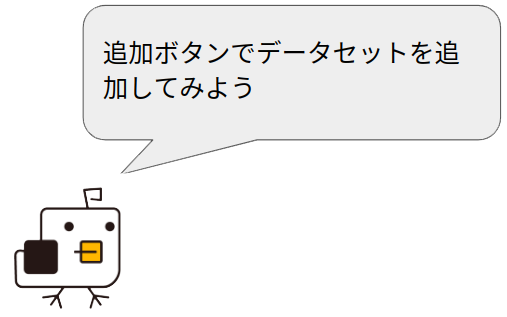

{{ checked_all ? total_count - unchecked_id_a.length : checked_id_a.length }}件のデータを ！テーブル内のデータが全削除されます。一度削除したデータは元に戻せません。 本当に削除してもよろしいですか？
全データが削除されます
本当にコピーしてもよろしいですか？
認証ユーザーを選ぶ
本当に現在の{{modalCustomFilter.filter_type == 'filter' ? 'フィルタ' : 'ビュー'}}({{modalCustomFilter?.name ? modalCustomFilter.name : 'カスタム'}})を削除してもよろしいですか？
テーブル内のデータが全て削除されます。本当に削除してもよろしいですか？
※CSVのヘッダー(1行目)は編集しないでください。
！セルを空欄にしてアップロードした場合は、元の値は保持されず、値が削除（計算式の場合は値の更新）されるよう変更されました。元の値を保持したい場合、{{ '{NOCHANGE}' }} をセルに入れるか、その項目列をCSVから削除してアップロードを行ってください。
CSVダウンロード CSVダウンロード（空）
※CSVアップロードに使用する場合、ヘッダー(1行目)は編集しないでください。
※ 関連テーブルの【{{missing_datasets}}】も含めエクスポートされます。
本当に削除してもよろしいですか？
{{jsonContent}}
選択中のフィルタを上書き保存します。よろしいですか？